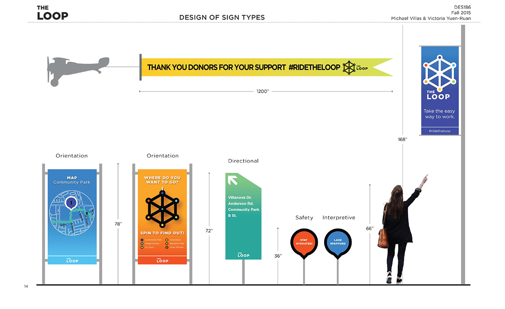
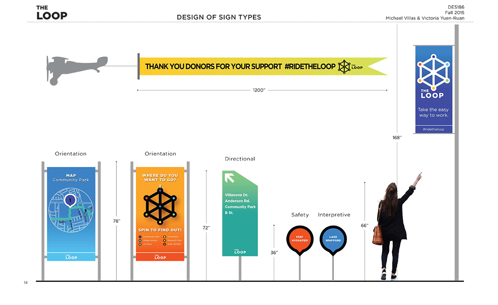

The Loop
 


What is the Davis Bicycle Loop?
The Loop is a scenic twelve mile bike path around the perimeter of Davis aimed at connecting people to their local surroundings. It is currently being used as a commuter path with limited recreational use. The path is not particularly a well known route unless you are a local or enjoy bike riding for fun.
What is the Objective?
The objective is to re-new the Davis Bicycle Loop with new wayfinding and signage as well as a brand new visual identity system in order to increase awareness and use of the Davis Bicycle Loop.
Research & Process
Currently the only indication that the Davis Bicycle Loop exists are these fading green markings on streets and bike paths. There are two green strips that indicate the direction the path goes toward. In the center is the City of Davis logo with the words Davis Bicycle Loop above the logo. At some parts of the loop the green markings are visible. In other areas the markings are almost completely gone. This prompted me to think of other forms of directional signage that could be more noticeable and less susceptible to wear.

Including directional signage, thinking about what sort of orientation, safety, and promotional signage to include was important to completing a full identity system for the Davis Bicycle Loop. It was also important that signs not be restricted to the ground but also be visible looking straight ahead as people walk or bike by. For these kinds of signs, considering the type of materials used so that wear from weather or by human touch should have as minimal of an impact as impossible.